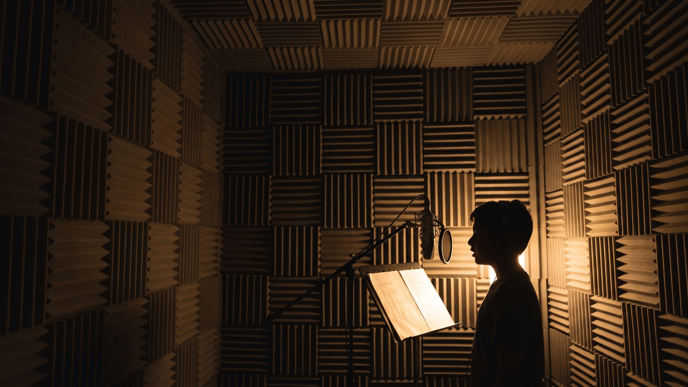
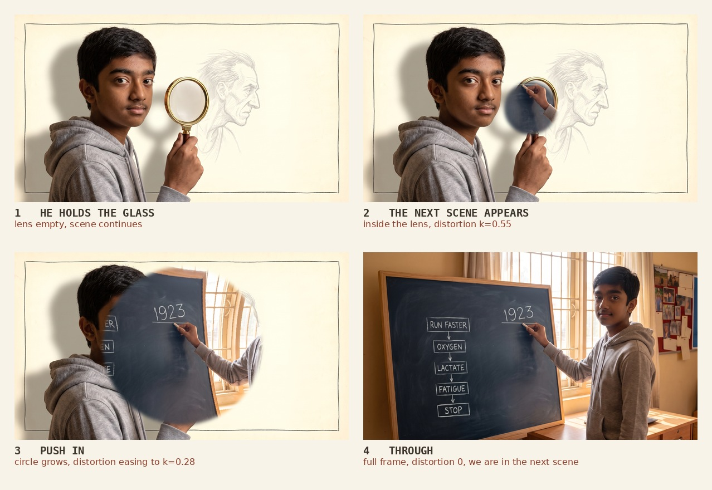
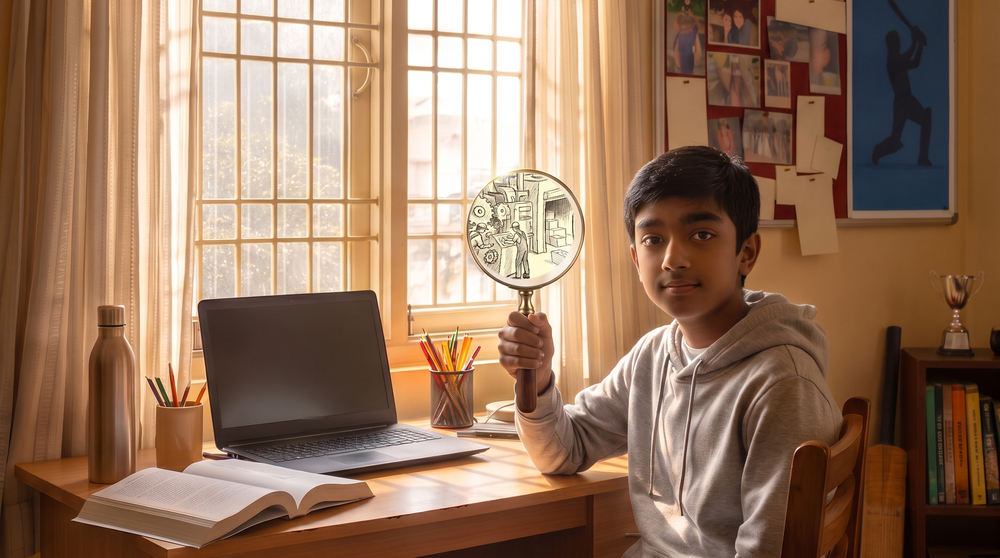
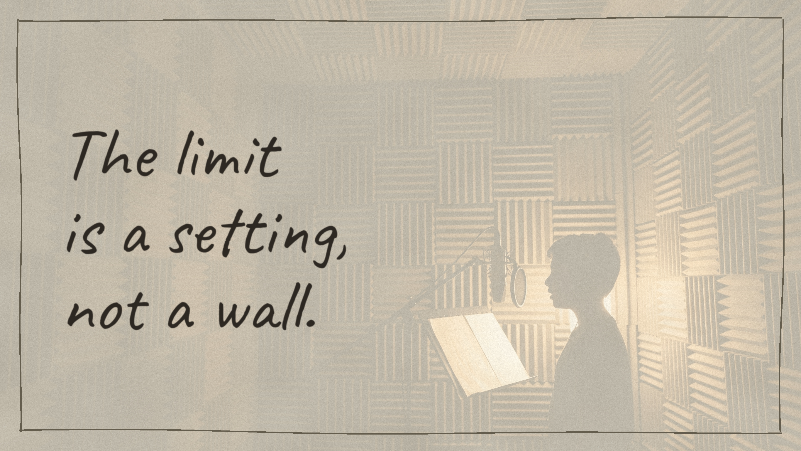

Start here
This page holds everything for the animation. Each scene is one zip with its frames, its audio and its timecode. Download what you are working on, come back when you need the next one.
The film is 1 minute 57 seconds at 25 fps, non drop. The competition limit is a hard 2 minutes measured on the YouTube clock, so the running time cannot grow. Every frame carries an in and an out timecode and those numbers are calculated from the audio, not estimated.
Every image is 2731 × 1536, true 16:9.
What you are not being asked to do. No character animation, no lip sync, no walk cycles. The artwork arrives finished. Your work is compositing, transitions, parallax and small living details.
The three layers
Nobody in the audience is told any of this. They absorb it in the first twenty seconds.
| layer | what it is | how it looks |
|---|---|---|
| Drawn | Everything imagined. The factory inside the muscle, the tanks, Coach Brain, the lever. | Graphite pencil on warm cream paper. |
| Live action | Manan. The evidence, and the person who came to look. | Photographed against grey, cut out, placed in the drawing, casting a real shadow onto the paper. |
| The booth | The film being made. He records the narration. | Dark room, one warm backlight, he reads as a silhouette and the page is the only lit thing. |

The rule underneath all three: photograph what is true, draw what is thought. When you are unsure which layer something belongs to, ask whether it happened or whether somebody imagined it.
The magnifying glass transition
This is the most important thing on the page. The glass is not a prop, it is how the film changes scene.
Wherever Manan holds the glass up at the end of a shot, that lens is the door into the next one.
It happens twice: 1.6 into the lecture room, and 2.3 into the factory.

The optical part matters more than the move. We are not cutting through a circle. We are going through a lens, so the new scene arrives already bent, and straightens only as we come out the other side. If the distortion is missing it reads as a cheap wipe. If it lingers it reads as a gimmick. It should resolve just as the circle reaches the frame edge.
The move, in numbers
total 20 frames 00:00:00:20 at 25 fps
frames 1 to 4 the next scene fades up inside the lens
barrel distortion k = 0.55
scale 100%, circle stays the size of the lens
frames 5 to 14 push in. the circle grows from the lens to the frame edge
ease out, not linear. slow at the start, quick at the end
barrel eases 0.55 -> 0.12
a little chromatic aberration on the circle edge, 2 to 3 px
frames 15 to 20 the circle passes the frame edge and is gone
barrel eases 0.12 -> 0
aberration to 0, edge softness to 0
we are simply in the next scene
Details that make it read as glass
- Bright rim. Keep a thin highlight on the inside of the brass while the circle is still small. Glass catches light at its edge and that single line does most of the work.
- Edge softness. The circle edge is not hard. 4 to 6 px of softness while small, easing to 0 as it fills the frame.
- The paper stays. The cream paper grain sits over both scenes for the whole transition. It never blinks off. The paper is the one continuous thing in the film.
- Sound. A short low swell, no whoosh. It is a boy looking closer, not a portal opening.
The reason this exists. The film is about looking at something ordinary and finding something bigger inside it. The glass does exactly that, literally, every time we change scene. It is the film's argument built into its grammar, which is why it is worth spending the time on.

Frame 2.3 is the same idea held still: his real room outside the circle, the drawn
factory inside it. Everything outside the lens is photographed, everything inside is drawn. The
transition is that image set moving.
The end card

The last frame but one. His real footage runs edge to edge, the cream paper lies over the whole frame, and the sentence is hand drawn on top.
The words arrive as he speaks them. Nothing is on the paper when the frame opens. Each word is written on, in his own hand, in time with his voice, as though somebody is writing while he reads. Finish the last word, hold about a second, then cut to the blank sheet.
The blank sheet is 14 frames of empty cream paper with the hand drawn border. Nothing on it. It is the last thing in the film.
Rules that hold everywhere
- His shadow is drawn onto the paper. Wherever Manan sits in a drawn panel, his shadow crosses the pencil lines and they stay visible through it. That shadow is what puts him inside the drawing instead of on top of it.
- Parallax, gently. Background and characters are separate. A slow push or drift gives the panels depth. Do not overdo it, this is a comic strip and it should feel held rather than floaty.
- Small living details. A few dials turning in Coach Brain's room, a light blinking, the fibres pulsing. Enough that the frame breathes, not enough to look animated.
- Bubbles arrive, they do not pop. Draw on quickly, hold, cut away with the frame. The character voices are already recorded and cut to length, so time the bubble to the audio.
- Scene 6 is the peak. Ten frames, one fibre to a whole world flying. It should accelerate. Everything before it is patient so that this can rise.
- Never let the running time grow. 1:57 with 2.2 seconds of margin. There is nowhere to put more.
Downloads
One zip per scene. Each contains every frame at full size, the character audio for that scene, a timecode CSV and an INFO file with the lines and any transition notes.